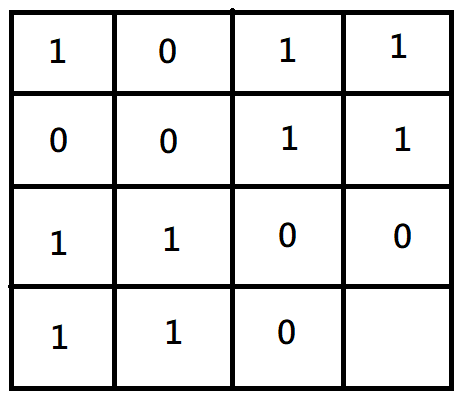

題目 : UVa Link
給一 N x N 的矩陣，裡面每個元素皆為 0 或 1，且每個元素的 parity 定義為該元素位置的上、下、左、右四個位置中 1 的數目
題目要求我們要把其中一些 0 改成 1，讓所有元素的 parity 皆為偶數 ( 也就是 0、2、4個 )，並輸出改變次數最少的值 ( 若無法的話輸出 -1 )
測資
Input :
3
3
0 0 0
0 0 0
0 0 0
3
0 0 0
1 0 0
0 0 0
3
1 1 1
1 1 1
0 0 0
Output :
Case 1: 0
Case 2: 3
Case 3: -1
解法
我們先從 2 x 2 的來看一下，列出所以可能的情況組合，共有 22x2 = 16 種情況
其中，合法的只有 4 個 ( 每個元素周圍的 1 必須為偶數 )
因此，若題目給個矩陣是 2 x 2 的，我們只要把他與這 4 個矩陣比對一下
找出 0 -> 1 轉換次數最少的，就是解答
也有可能會無解，因為只能 0 變 1 不能 1 變 0，所以有可能會湊不出偶數個 1
但是，題目最多會給到 15 x 15，這樣所有的可能組合為 215x15 = 2225 種
是一個很大的數目，若要全部暴力找出來會耗時很久，所以我們要想辦法優化
思考一下，每次都要全部列舉出來再找出合法的矩陣並在和題目的矩陣比對，太冗長了
題目都已經給我們一個矩陣的了，所以我們應該要從這個矩陣出發
首先，在列舉所有矩陣的時候，我們先列舉出第一列 ( row )
若題目矩陣的第一列沒有辦法轉換成此矩陣的話，就放棄他
例如一個 4 x 4 的例子，題目給定
我們就列舉出 24 = 16 種可能，並把題目矩陣第一列沒辦法轉換到的情況給刪除 (注意 1 沒辦法變換成 0)
只有 4 種情況是可以從題目的矩陣轉換過來的
接下來，我們有了第一列，為了讓第一列的 parity 都為偶數，我們就可以推出合法的第二列
再用第二列推出第三列
再推出第四列
同樣地方法，推出其他 3 個矩陣
最後將題目的矩陣與這四個矩陣去做比對，找出 0 –> 1 轉換次數的最少值
推廣
若題目輸入 N x N 矩陣 M，N 最大為 15
- 先列舉出第一列的所有可能 : 2N 種，若 M 無法轉換成這種情況，則刪除
- 對合法情況推導出矩陣，Row 1 -> Row 2 -> … -> Row N
- 與題目的矩陣進行比對，找出最小的轉換次數
證明
我們用 Row 1 推導出 Row 2，在推導出 Row 3 … 到 Row N
除了 Row N，每一列 Row t 的元素皆可以保證 parity 為偶數
因為在推導的過程中，可以用 Row t+1 來修正 Row t
但是 Row N 沒辦法用 Row N+1 來修正，不過以剛剛的那些例子來看，Row N 似乎都符合 even parity
所以我們要來證明這件事
首先，我們要先確立一個觀念
給定任意的 Row 1 組合，用其推導出來的矩陣必定唯一
也就是說只要給定第一列後，無論用上述的方法或是其他可行的方法，不同方法推導出符合 even parity 的矩陣一定是一樣的
這邊先暫時忽略最後一列有沒有符合 even parity，但可以確定的是 Row 1 ~ Row N-1 都會符合 even parity
那麼為了讓 Row N-1 也符合 even parity，我們就要用 Row N 來修正他，所以 Row N 也會是唯一的
接下來就要開始證明為甚麼 Row N 會符合 even parity
由於不管用任何方法，只要給定第一列，推導出的矩陣一定是唯一的 ( 由上述的定理 )
那我們換一種方式
假設一個 4 x 4 的矩陣，第一列給定為
那麼我們首先先將第一列翻轉到第一行
顏色相同的數字就是相對應的地方
我們再從剩下的空白的 3 x 3 矩陣推導
規則一樣是用上面一列的元素來推導下面一列的元素
然後，同樣地
將剛剛推導出的第二列也翻轉到第二行
其實這一步，我們可以看成是我們從剩餘的第一個空白位開始
由左而右推導，並且也將推導出的元素填到對角線另一邊相應的位置
我們要推導出第二列第二行的元素
可以用它上一列的元素來推導，或是用它左邊的元素來推導
因為剛剛我們把第一列翻轉到第一行，所以相對於對角線的相對位置元素會是一揚的，因此這 2 種方式是等價的
再來我們就繼續推導第二個元素，同樣地可以用上一列或是前一行的元素來推導
另外要注意的是，推導出這個元素後，它會同時修正它上一列 ( 對角線上半部 ) 與前一行 ( 對角線下半部 ) 的元素
也就是綠色的元素會修正紅色的元素，令他們都符合 even parity
再來就是最後一個元素
然後再重複一樣的動作，由第一個空白的位置開始推導，並填到相對的位置

最後會剩下一個空白位置，同樣我們可以用上一列或是前一行的元素來推導
最後我們可以知道，整個矩陣會對稱於主對角線
那我們可以將整個過程簡化
(1) 從第一列推導出整個矩陣上半部
(2) 再將它翻轉過去
由於矩陣上半部所有元素都會符合 even parity ( 因為我們就是用這個規則推導出這些元素的 )
所以翻轉過去後，翻轉的元素也都會符合 even parity，所以整個矩陣都會符合 even parity
那麼最後一列也會符合這個規則，我們就證明出來了
所以說我們可以不需要再去檢查最後一列是否是合法的了
程式碼
1 |
|
時間複雜度
列舉第一列的時間複雜度為 O( 2N )
推導矩陣與比較矩陣為 O( N2 )
總時間複雜度為 O( 2N * N2 )